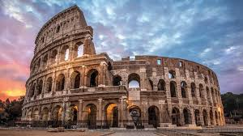

Viaja al pasado. Escucha a sus protagonistas.
Plaza de Mayo, Buenos Aires — 25 de mayo de 1810

Relata: Manuel Belgrano. Te guía entre paraguas y banderas, mientras el Cabildo vibra. Escucharás sus dudas, el pulso de la multitud y el crujir de la madera bajo tus pies.
Revolucion de mayoRoma — Inauguración del Coliseo, año 80 d.C.
Relata: Tito Flavio, el emperador que abre las puertas del anfiteatro. Oirás el rugido de la plebe, el metal contra metal y el eco de su voz desde el palco imperial.
Coliseo RomanoFlorencia — Talleres y plazas, 1504

Relata: Leonardo da Vinci. Desde su cuaderno, te hace mirar engranajes, bocetos y el bullicio de la Piazza della Signoria cuando se presenta el David de Miguel Ángel.
RenacimientoGiza — Construcción de la Gran Pirámide, ca. 2560 a.C.

Relata: Hemiunu, arquitecto real. Entre rampas y cantos de obreros, te muestra maquetas, herramientas y el horizonte dorado del desierto al caer el sol.
Piramides EgipciasParís – Segunda Guerra Mundial

Relata: Charles de Gaulle, líder en tiempos convulsos. Entre mapas desplegados y ecos de discursos, te guía por salones donde resuena la voz firme de la Francia libre.
ParísKioto – Japón Feudal

Relata: Un maestro samurái del shogunato Tokugawa. En el dojo, la katana reposa junto al silencio solemne, mientras enseña disciplina y honor bajo la luz tenue de los faroles.
Kioto